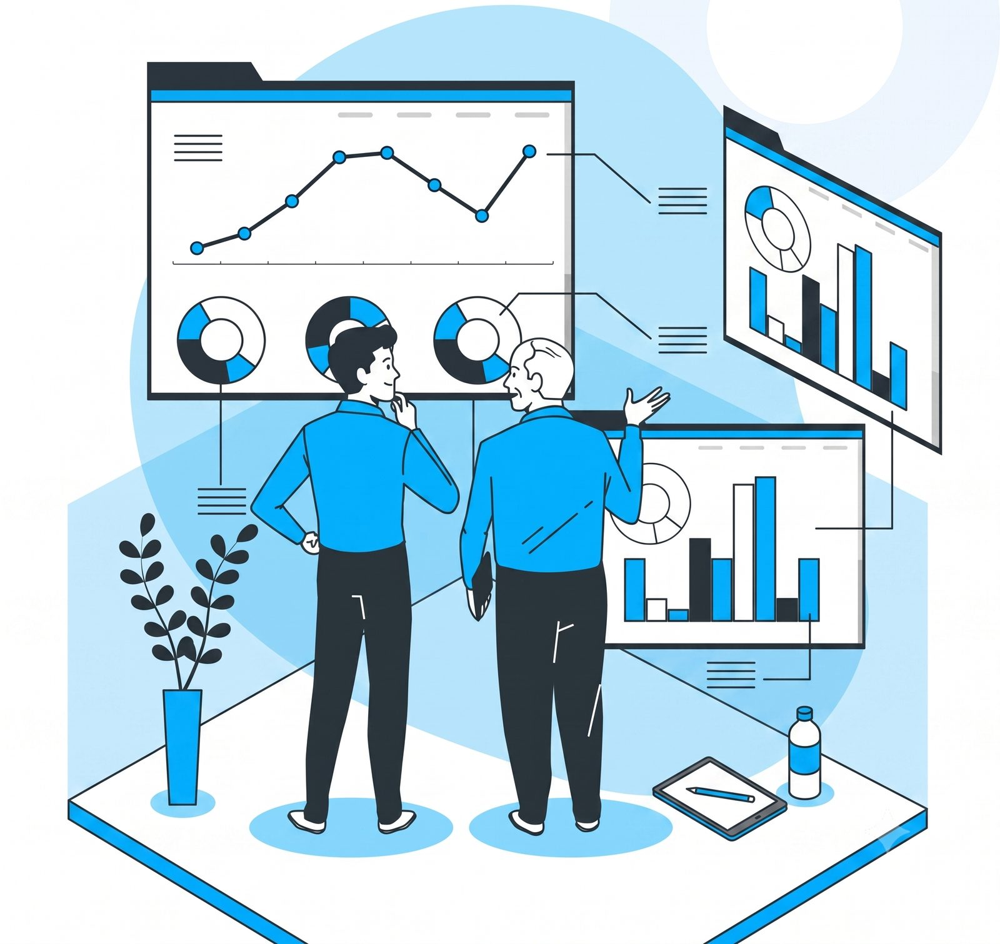

We map your operations — approvals, onboarding, invoicing, reporting — and automate the repetitive middle, with live dashboards so leadership sees what's happening instantly.
Numbers flow from your CRM, billing, and ops tools into one live dashboard — no more end-of-month spreadsheet marathons or stale figures in meetings.
Before we automate, we analyze: where time is lost, which processes leak money, and what the data says you should fix first.


We document how work actually flows today — handoffs, delays, duplicate entry.
Your numbers, cleaned and connected: where revenue, cost, and time really go.
Every automation candidate scored by hours saved and effort to build.
A prioritized plan — quick wins first, systems change second.
When approvals, reporting, and back-office busywork run themselves, growth stops meaning "hire more people to push paper."